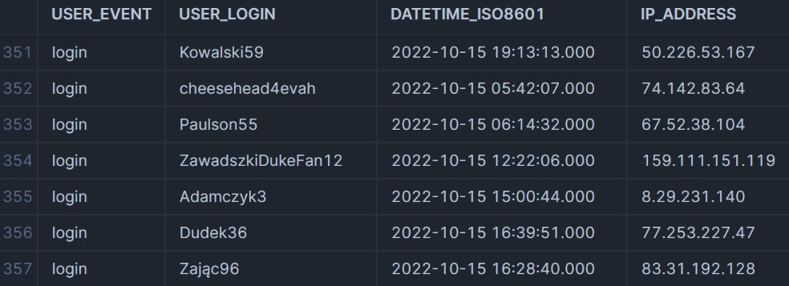
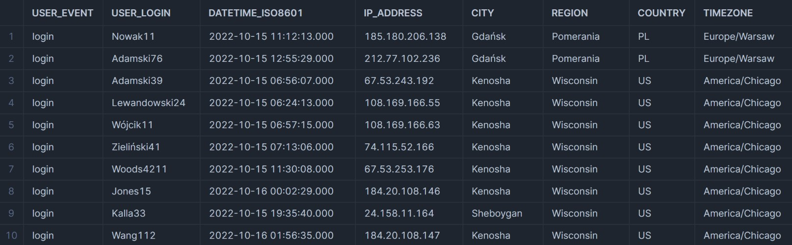

Snowflake Pipelines (Part 1)

If you’re currently working in data, you’ve likely heard of snowflake, and for good reason. Snowflake is a powerful data warehousing solution, but picking the right tool for the job can get tricky if you’ve never used it before. In part 1 of this 2 part series we’ll begin by exploring how we can ingest data from an external stage into snowflake and perform a simple ELT process. Then in part 2 we’ll learn how to integrate what we’ve done into a fully automated pipeline.
External stages
For those who don’t know, external stages, whether you’re using AWS, Azure, or GCP, allow you to create a ‘window’ to an external data source. If you have data in an s3 bucket, then creating an external stage in snowflake will allow you to access data within the bucket without needing to transfer it. To begin, we’ll set up our external stage.
Creating the external stage
Of course, You’ll need an s3 bucket (or the equivalent for azure/GCP) that you can access. For simplicity, we’ll be using one provided by snowflake in their data engineering course called uni-kishore-pipeline, which has new data added every 5 minutes containing the login/logout events of a videogame’s player base. If you want to follow along and use the same bucket, you’ll need a snowflake account in US West Oregon.
If you’d like to use your own s3 bucket, the steps are as follows: Create an IAM policy with the following permissions (you can always add more later):
- PutObject
- GetObject
- ListObject
- DeleteObject
- GetBucketLocation
- GetObjectVersion
Create an IAM user, add the policy, and then navigate to the security credentials to generate an access key. Select ‘other’ as the use case if you’re not overly familiar with access keys. Be sure to save your keys. Next, head over to snowflake and enter the following:
CREATE STAGE your_personal_stage
url = 's3://your-personal-bucket/folder/'
credentials = (aws_key_id = "public-key", aws_secret_key = "super-secret-key");
You should now have access to the contents of your bucket. You can check by entering:
list @your_personal_stage;
Formatting the Data
Next, we need to figure out the format of the data. One way to check is to open a file in a basic text editor. We can also use SQL to take a look.
-- listing all files contained in the stage
list @uni_kishore_pipeline;
All files are json. We'll take a closer look at the contents.
select $1, $2, $3, $4, $5 from
@uni_kishore_pipeline;
It seems we have json files without an outer array. We’ll create the file format as such.
create file format FF_JSON_LOGS
type = JSON
STRIP_OUTER_ARRAY = FALSE
Next we’ll create a table and add our files, and then create a view with the data formatted nicely.
CREATE OR REPLACE TABLE PL_GAME_LOGS ( -- PL is just short for 'pipeline'
RAW_LOG VARIANT
);
COPY INTO PL_GAME_LOGS
FROM @uni_kishore_pipeline
file_format = (format_name = ff_json_logs);
CREATE OR REPLACE VIEW PL_LOGS as (
select
RAW_LOG:ip_address::text as IP_ADDRESS,
RAW_LOG:user_event::text as USER_EVENT,
RAW_LOG:user_login::text as USER_LOGIN,
RAW_LOG:datetime_iso8601::TIMESTAMP_NTZ as datetime_iso8601,
FROM PL_GAME_LOGS
);
The view will look as follows:
Enriching the Data
We have our data in the correct format, but we only have four columns. We’re also missing information about the UTC. We do have the IP addresses, and using the snowflake marketplace, we can download the ipinfo IP geolocation database to enrich our data.
The ipinfo database comes with many functions built in, and we’ll use them as follows:
- TO_JOIN_KEY: Converts IP addresses to specific keys that can be joined on.
- TO_INT: Converts the IP address to integers, allowing us to compare integer values rather than strings (much more efficient).
- CONVERT_TIMEZONE: Allows us to add the UTC information.
- DAYNAME: Adds the day of the week.
SELECT logs.ip_address
, logs.user_login
, logs.user_event
, logs.datetime_iso8601
, city
, region
, country
, timezone
, CONVERT_TIMEZONE('UTC', timezone, logs.datetime_iso8601) as GAME_EVENT_LTZ
, DAYNAME(GAME_EVENT_LTZ) as DOW_NAME
from PL_LOGS logs
JOIN IPINFO_GEOLOC.demo.location loc
ON IPINFO_GEOLOC.public.TO_JOIN_KEY(logs.ip_address) = loc.join_key
AND IPINFO_GEOLOC.public.TO_INT(logs.ip_address)
BETWEEN start_ip_int AND end_ip_int;
Often the exact time of day isn’t particularly useful, so we’ll create a lookup table as well to encode the times into categories and add it to our view. We’ll also rename a few more columns.
create or replace table time_of_day_lu (
hour number
,tod_name varchar(25)
);
insert into time_of_day_lu values
(6,'Early morning'),
(7,'Early morning'),
(8,'Early morning'),
(9,'Mid-morning'),
(10,'Mid-morning'),
(11,'Late morning'),
(12,'Late morning'),
(13,'Early afternoon'),
(14,'Early afternoon'),
(15,'Mid-afternoon'),
(16,'Mid-afternoon'),
(17,'Late afternoon'),
(18,'Late afternoon'),
(19,'Early evening'),
(20,'Early evening'),
(21,'Late evening'),
(22,'Late evening'),
(23,'Late evening'),
(0,'Late at night'),
(1,'Late at night'),
(2,'Late at night'),
(3,'Toward morning'),
(4,'Toward morning'),
(5,'Toward morning');
-- Our updated view
SELECT logs.ip_address
, logs.user_login as GAMER_NAME
, logs.user_event as GAME_EVENT_NAME
, logs.datetime_iso8601 as GAME_EVENT_UTC
, city
, region
, country
, timezone as GAMER_LTZ_NAME
, CONVERT_TIMEZONE('UTC', timezone, logs.datetime_iso8601) as GAME_EVENT_LTZ
, DAYNAME(GAME_EVENT_LTZ) as DOW_NAME
, TOD_NAME
from PL_LOGS logs
JOIN IPINFO_GEOLOC.demo.location loc
ON IPINFO_GEOLOC.public.TO_JOIN_KEY(logs.ip_address) = loc.join_key
AND IPINFO_GEOLOC.public.TO_INT(logs.ip_address)
BETWEEN start_ip_int AND end_ip_int
JOIN time_of_day_lu lu
ON HOUR(GAME_EVENT_LTZ) = lu.hour;
Taking another look at the data, we’re left with far more information to go off.
After enriching our data it’d be a good idea to save it. We’ll create a new table using CTAS called LOGS_ENHANCED.
CREATE TABLE LOGS_ENHANCED AS (
SELECT logs.ip_address
, logs.user_login as GAMER_NAME
, logs.user_event as GAME_EVENT_NAME
, logs.datetime_iso8601 as GAME_EVENT_UTC
, city
, region
, country
, timezone as GAMER_LTZ_NAME
, CONVERT_TIMEZONE('UTC', timezone, logs.datetime_iso8601) as GAME_EVENT_LTZ
, DAYNAME(GAME_EVENT_LTZ) as DOW_NAME
, TOD_NAME
from PL_LOGS logs
JOIN IPINFO_GEOLOC.demo.location loc
ON IPINFO_GEOLOC.public.TO_JOIN_KEY(logs.ip_address) = loc.join_key
AND IPINFO_GEOLOC.public.TO_INT(logs.ip_address)
BETWEEN start_ip_int AND end_ip_int
JOIN AGS_GAME_AUDIENCE.RAW.TIME_OF_DAY_LU lu
on HOUR(GAME_EVENT_LTZ) = lu.hour
);
Summary
So what have we done so far?
- Connected to our s3 bucket and created a stage
- Explored the data and created an appropriate file format
- Loaded the data into a table and created a view from the table
- Enriched our data and locked it down as a table
- With that out of the way we can move on to part 2, where we’ll have some fun creating a fully automated pipeline.
With that out of the way we can move on to part 2, where we’ll have some fun creating a fully automated pipeline.